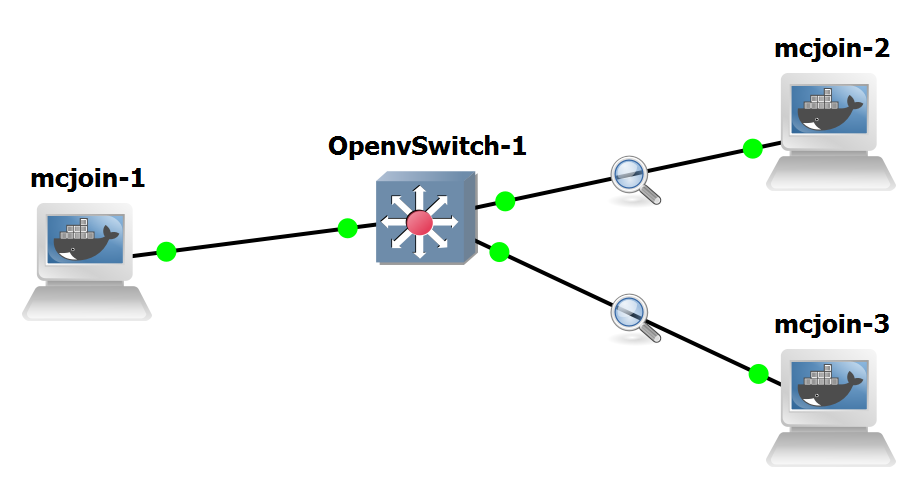
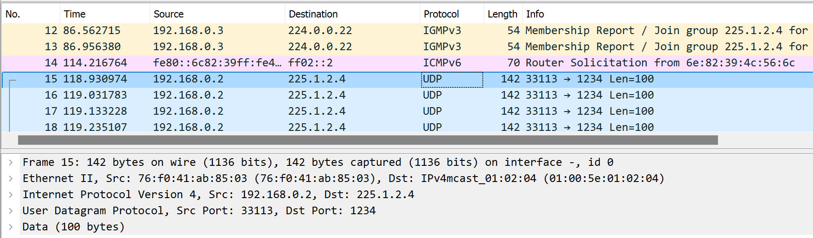

Lab #17
Open vSwitch: Multicast transmission in a LAN with IGMP snooping
The purpose of this lab is to show how IGMP snooping is able to filter multicast IP traffic in a LAN context.
Preparation steps
This lab requires the GNS3 VM to instantiate Docker containers of Linux-based routers.
In particular, it requires that you have already executed once the preparation steps described for Lab #12 and Lab #13.
Experiment steps
- Recreate the following topology in GNS3.

- Right-click on mcjoin-1 and select "Edit config" to modify its network configuration to assign the 192.168.0.2 IP address to the eth0 interface with netmask 255.255.255.0.

- Do the same for mcjoin-2 and mcjoin-3 to assign to their eth0 interfaces the IP addresses 192.168.0.3 and 192.168.0.4 (with netmask 255.255.255.0), respectively.
- Start all devices.
- Start capture on link connecting OpenvSwitch-1 to mcjoin-2.
- Start capture on link connecting OpenvSwitch-1 to mcjoin-3.
- Right-click on OpenvSwitch-1, mcjoin-1, mcjoin-2 and mcjoin-3 to open their Auxiliary Console terminal
- In the OpenvSwitch-1 terminal and execute the following:
- In the mcjoin-1 terminal execute the following:
ping 192.168.0.3
to verify that mcjoin-1 can exchange packets with mcjoin-2ping 192.168.0.4
to verify that mcjoin-1 can exchange packets with mcjoin-3
- In the mcjoin-2 terminal and execute the following:
mcjoin 225.1.2.4
to let mcjoin-2 join the 225.1.2.4 multicast group.
- In the mcjoin-1 terminal and execute the following:
mcjoin -s 225.1.2.4
to transmit packets to the 225.1.2.4 group; stop packet transmission after a few seconds by pressing ctrl-c at the command line.
Expected results
An IGMP snooping switch does not generate or respond to any multicast messages; instead it passively snoops on IGMP query, report, and leave (IGMP version 2) messages transferred between IP multicast routers/switches and IP multicast hosts to determine the multicast group membership.
Basically, this experiment should show that multicast packets transmitted by mcjoin-1 to the 225.1.2.4 multicast group are transmitted by OpenvSwitch-1 only to ports connected to end-systems that joined the group, i.e. mcjoin-2 in our experiment.
The instance of Wireshark activated onto the link connecting OpenvSwitch-1 to mcjoin-3 should not show such packets.
Traffic analysis

Wireshark shows a sequence of UDP packets sent by 192.168.0.2 (mcjoin-1) to the multicast IP group 225.1.2.4.
Notice that the MAC destination address for the Ethernet frames carrying the multicast IP packets sent to 225.1.2.4 is 01:00:5e:01:02:04.
This address is computed according to what is described in
RFC-1112 (Section 6.4):.
An IP host group address is mapped to an Ethernet multicast address
by placing the low-order 23-bits of the IP address into the low-order
23 bits of the Ethernet multicast address 01-00-5E-00-00-00 (hex).
Because there are 28 significant bits in an IP host group address,
more than one host group address may map to the same Ethernet
multicast address.
Return to list of labs
Copyright (c) 2024 - Roberto Canonico
Last updated: October 4, 2024 by Roberto Canonico